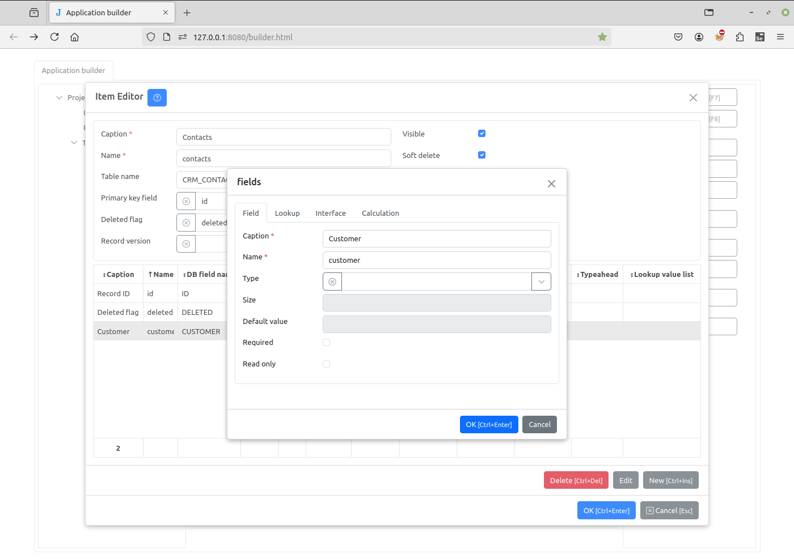
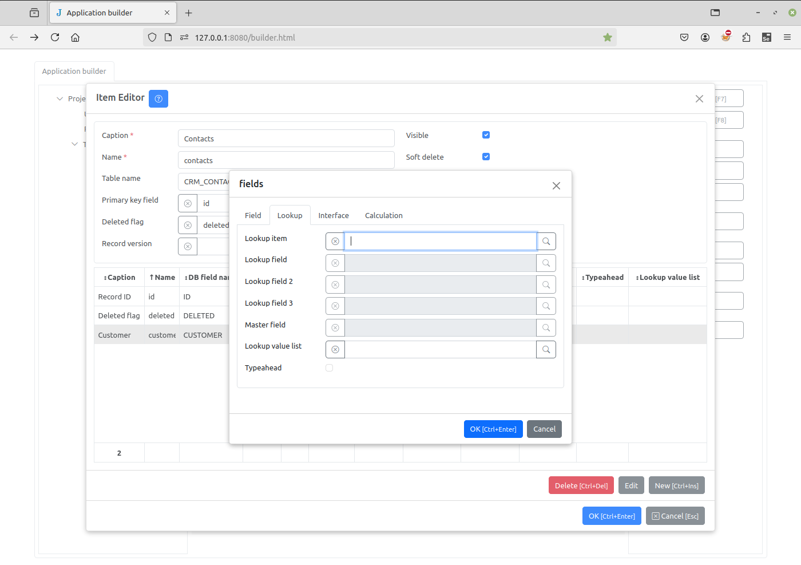
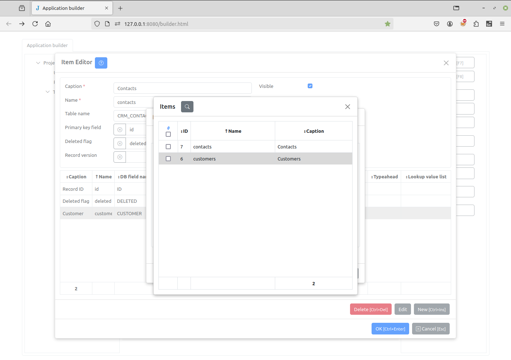
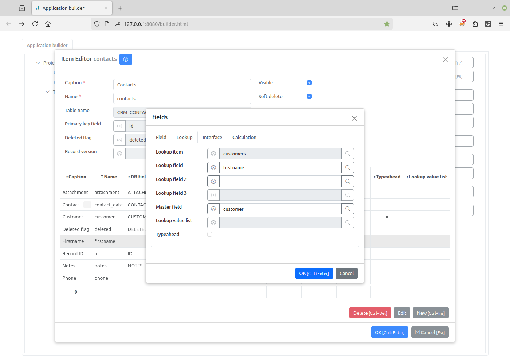
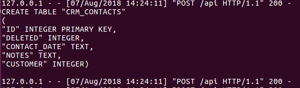
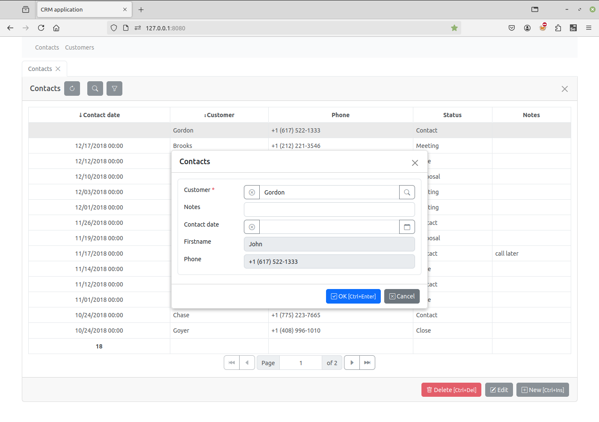

Lookup fields¶
Now, we will create the “Contacts” journal and use lookup fields to connect contacts to customers. Lookup fields allow an element of one item (i.e., catalog or journal) to reference an element from an other item.
Select the “Journals” group in the project task tree, and add a new journal in the same way that we created the “Customers” catalog. Journals, like catalogs, correspond to different tables in the database. See this link for more information.
First, add a “Contact date” field of the DATETIME type,
and a “Notes” field of the TEXT type.
Then, add the lookup field “Customer”, which will store a reference to a record in the “Customers” catalog.
{kind=link}
To create a lookup field, first specify its caption and name, and leave the type empty. Then go to the Lookup tab and click the button to the right of the Lookup item input.
{kind=link}
This brings up a list of items. Double click the “Customer” record to select it.
{kind=link}
Next, we need to specify a lookup field. This is how the customer will be located. Here we choose “Lastname”. Leave the other fields empty and press OK.
{kind=link}
Repeat this procedure to add the “Firstname” and “Phone” lookup fields. For these fields, we specify the “Customer” field as their Master field attribute. This connects them to the first “Lastname” lookup field we created, so that all three lookup fields refer to the same customer.
{kind=link}
{kind=link}
Click the OK button to save the “Contacts” item.
{kind=link}
As you can see, there are no “FIRSTNAME” and “PHONE” fields in the CRM_CONTACTS
table. This is due to the fact that we have set Master field attribute of these
fields to “Customer”. The “Customer” field will store a reference to a record in the
“Customers” catalog, and this record will have the “Firstname” and “Phone” fields.
Refresh the project page and, in the “Contacts” page, click the New button. You will see that there is a small button to the right of the “Customer” input.
{kind=link}
Click on it and select a record in the “Customers” catalog: the fields “Customer”, “Firstname” and “Phone” will be filled automatically.
{kind=link}